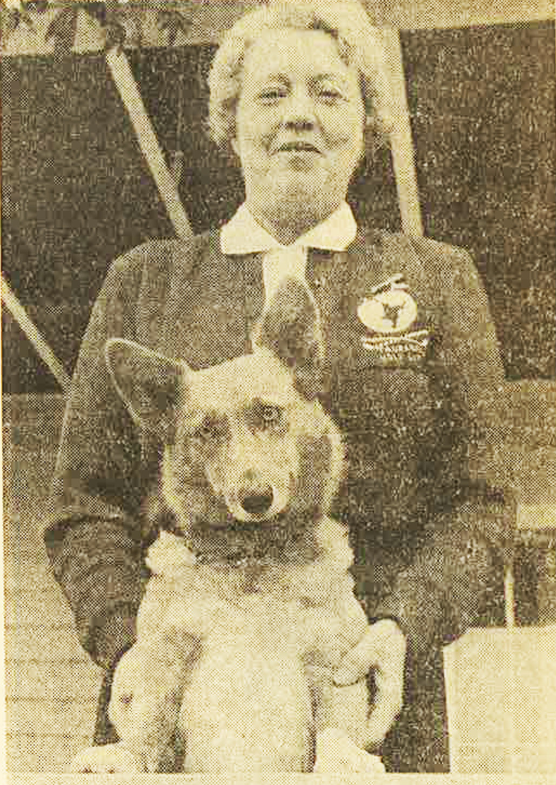
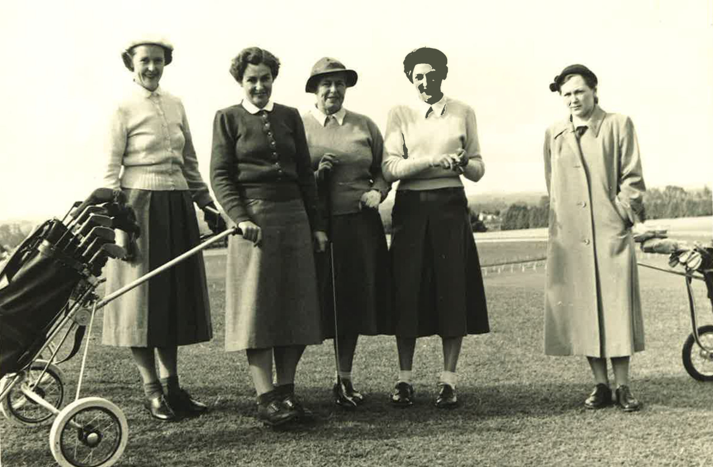

Above left to right - Joyce Waterworth,
Linda Carruthers, Violet Maltby, Betty Anderson, Ruth Anderson (caddy)
Left: Mrs J. Carnachan president of the womens club
David G. S. Mowat, editor · Published 2014
Above left to right - Joyce Waterworth,
Linda Carruthers, Violet Maltby, Betty Anderson, Ruth Anderson (caddy)
Left: Mrs J. Carnachan president of the womens club
Original caption text is retained in the passage above. Image positions differ from the printed page; no identities or dates have been inferred from position.

